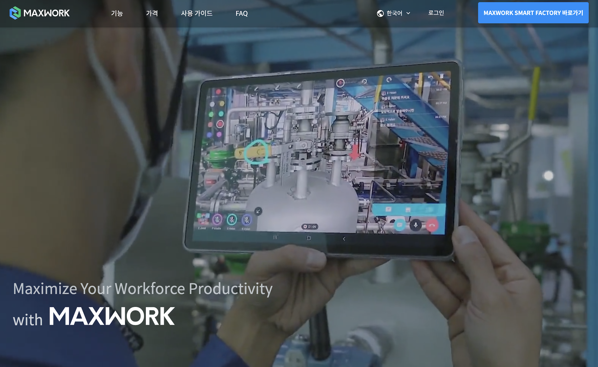
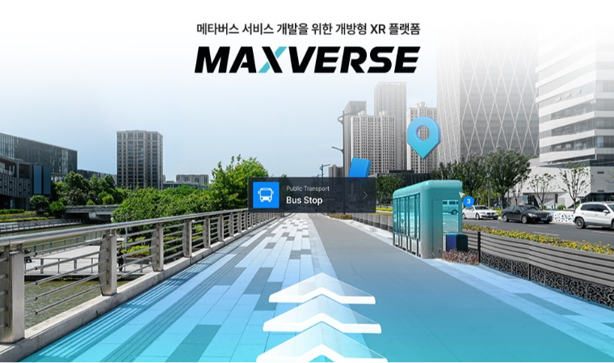
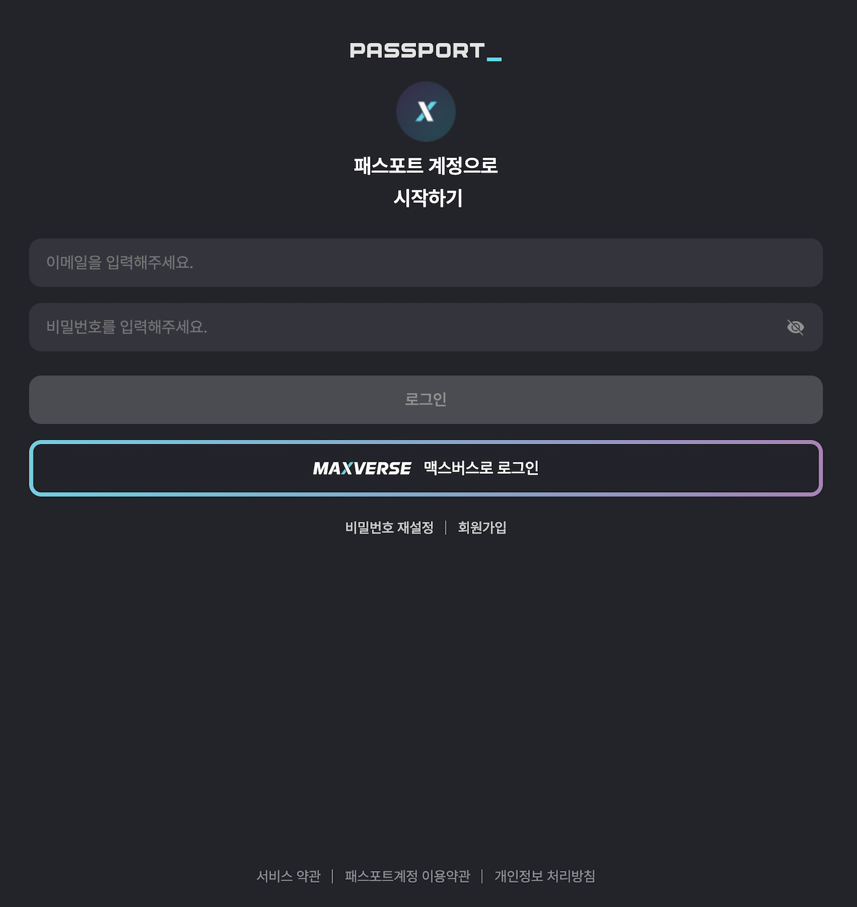

"코드 품질부터 팀 문화까지, 서비스의 성장을 함께 만드는
개발자"
- 사용자 경험 개선과 서비스 성능 최적화에 집중하며 비즈니스 성과로
이어지는 개발 경험이 있습니다.
- 팀 리딩 경험을 바탕으로 개발 프로세스를 개선하며 팀 전체가 함께
성장할 수 있는 환경을 만들어갑니다.
Career
Vue.js → Next.js 마이그레이션 및 아키텍처 설계 리드
App Router의 서버 컴포넌트를 활용하여 클라이언트 하이드레이션 부하 감소, TBT(Total Blocking Time) 지표 개선
Next.js SSG 적용으로 초기 로딩(FCP) 최적화 및 서버 비용 절감
IntersectionObserver를 활용한 스크롤 기반 섹션 애니메이션 구현
OAuth 2.0 / OIDC 기반의 통합 로그인 시스템 설계 및 구축으로 안전한 단일 인증 환경 구현
Authorization Code Flow 기반 인증/인가 아키텍처 설계 및 구현으로 토큰 탈취 방지 및 보안 표준 준수
Next.js 기반 공통 웹 아키텍처 설계를 통한 기술 스택 표준화 및 협업 효율화
상태 관리 이원화 전략(React Query 캐싱 + Redux Toolkit) 적용으로 서버 데이터와 클라이언트 상태 관리 최적화
Projects

산업용 AR 솔루션 및 설비 점검 관리 플랫폼

XR 메타버스 플랫폼 MAXVERSE의 스페이스 뷰어 소개 플랫폼

MAXVERSE 통합 인증(Single Sign-On) 서비스
전사 서비스 관리를 위한 백오피스 공통 인프라
Skills
Collaboration & Growth
Education